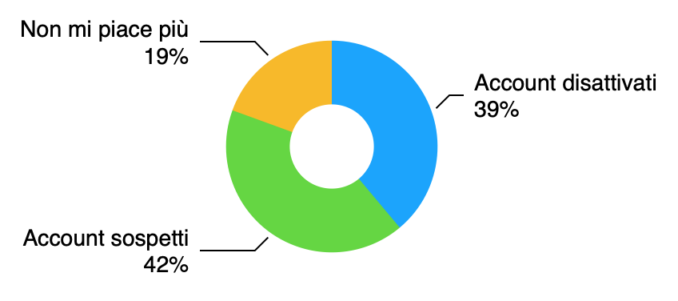

Chi gestisce una pagina Facebook sa di cosa sto parlando: più la pagina cresce e acquisisce una discreta base di utenza e più emerge un fenomeno fastidioso, ovvero una costante, cronica diminuzione dei fan della pagina. All’inizio si cerca di limitare l’emorragia, proponendo continuamente nuovi contenuti e cercando di coinvolgere più persone possibili, per bilanciare le perdite con nuovi arrivi. Poi ci si dispera, in una sorta di crisi esistenziale, chiedendosi in quale data la propria pagina ha iniziato a fare così schifo che la gente ha deciso di togliere il proprio like, pur di non vederla più in giro. E infine si grida al complotto, con teorie mirabolanti (e in parte vere) su come Facebook si adopererebbe per cercare di spingere gli amministratori delle pagine a pagare per aumentare la visibilità dei propri post, sabotando quindi il loro lavoro e la loro visibilità organica.
In realtà chi dovrebbe preoccuparsi maggiormente è proprio Facebook stessa: il problema principale, dati alla mano, non è che la gente si stufa di seguire le pagine a cui si era iscritta, ma si allontana proprio dal social stesso o addirittura non ne aveva mai fatto parte. Il mio campione di oltre 4000 persone dimostra esattamente questo: ogni mese circa una dozzina di persone se ne va, all’apparenza in modo spontaneo, ma a guardare meglio i motivi sono principalmente due, e ce li fornisce la stessa Facebook. Circa il 40% degli abbandoni sono dovuti alla “Rimozione di account disattivati e commemorativi” ovvero persone che chiudono il proprio profilo sul social oppure, in misura molto minore, profili di persone decedute che vengono trasformati in pagine commemorative.
E a pensarci non è così strano: sempre più si sta diffondendo la “moda” di togliersi da Facebook perché ormai considerato un luogo tossico, pieno di pubblicità e persone fastidiose, con un’età media sempre maggiore a causa dello scarso appeal della piattaforma tra i giovani. E sempre più persone iniziano a vantarsi di non fare parte di tale network. Un altro 40% tra coloro che se ne vanno dalle pagine è dovuto alla rimozione di account sospetti, quindi parliamo di persone che potenzialmente non sono mai esistite: profili falsi, profili di attività commerciali dediti esclusivamente allo spam seriale, profili doppi o tripli.
Insomma, solo il 20% del campione decide di premere il bottone del “non mi piace più”, il che abbassa a 2-3 persone al mese la cifra totale di chi se ne va, un dato ben più plausibile e innocuo se confrontato alle oltre 4000 persone totali.
